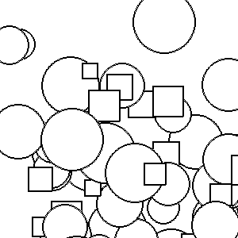

In creating games and simulations we have to include the ability for objects to behave independently. Lets revisit our program from Chapter 11 that created a variety of random graphic objects floating across the screen. If you are fuzzy on how we created graphics objects, you should revisit chapter 11 before continuing.

In the above code, all of the object move in the same direction. What if we needed to create objects that each move in their own direction? Presently all movement is controlled in the lines 46-47. We could hard code how each object moved but that would be come very difficult to write as we would need a new line of code for each object.
What we should do for each object is store the direction the object should travel and ask the the objects to move themselves. The concept of an object that knows how to draw itself and how to react to its environment brings us to Sprites.
A sprite is an object that can move about in a game, and has internal behavior and state of its own. For example, a spaceship would be a sprite, the player would be a sprite, and bullets and bombs would all be sprites.
Object oriented programming (OOP) is ideally suited to a situation like this: each object can have its own attributes and internal state, and a couple of methods. All sprites will need at least three methods.
We have some choices on how to implement a Sprite. If we created each sprite as its own object, we would not gain any benefit from the work that we have already done. We really want to reuse the graphic objects we created before to avoid work. One apporach is to use inheritance. With inheritance we would need to create a child class for Circle and a child class for Square. If we only sprites for Circles and Squares this might be an appropriate choice. However, if we had 8 separate graphic objects, we would need 8 subclasses.
In this situation, inheritance is probably overkill. A better technique is to use composition. Composition simply means that the new class will have a variable to store the previous class instead of using inheritance. In our case the sprite will have a graphics object as a data member. Our sprite will simply give commands to its graphic object in order to solve problems. This means we will only need to create one sprite class for any number of graphic objects that we might want to use.
Our sprite class creates a much more complex animation without cluttering the main loop of the animation. Let’s add some more additions to create an even more interesting effect. What if we wanted the sprites to change directions? Below is a common first pass at creating random movement by changing the update method.
This will introduce random movement, but it will not be the movement we had in mind. It creates an effect that looks like the objects are rapidly vibrating. If we want to create a better effect of random movement we need to insure that the movement lasts for a small period of time before the sprite switches direction.
We can accomplish through the use of an accumulator. We’ll call this accumulator countdown. In this case countdown is set to a random number that represents how many frames the sprite will travel before changing direction. Inside the update, sprite will decrement countdown by one. Once countdown reaches 0, a new direction is selected and the countdown timer is reset. The delay in picking a new direction, creates the illusion of purpose and sells off the random movement.
So far our sprites have been oblivious to their surroundings. In this section we will work towards creating sprites that react to the other objects within the world. Like many large problems we need to carefully dissect it and find out what the parts of the problem are.
Let’s work on the Bomb game. In this GAME the player moves a CHARACTER on the screen (a green circle) using keyboard commands. The player must avoid BOMBS. If a PLAYER touches a BOMB the GAME is over. The BOMBS move around the screen in a random manner.
Overlook the fact that this is a bad game. There is no win condition, and we have not indicated how the challenge level will increase over time. Sometimes a simple game is the best one to learn from. The first thing we should look at is what objects are present in our game description. One trick is to look for the nouns. We have capitalized the important nouns to make it easier to see. The bombs and character are the easiest nouns to see. Choosing to make game an object is a common technique to keep the data from getting too difficult to follow. If there was more than one player, we might also select that as an object to implement.
Once we have selected the objects in the game, we know what we need to create. The player is just a circle graphics object. We can reuse what we have created before. The Bomb is an object that needs to know if the player has hit it. (You could do this the other way around, the player needs to know if it has hit a bomb. As we already need to add logic to the bombs it seems like a good idea to do the collision logic in bombs as well.) The wandering aspect of the Bomb can be handled by using inheritance from the WanderingSprite we created in the last section. The Game object will be used to run the game loop and provide a nice way to let the objects in the game find each other.
Our bomb class inherits from the wandering sprite we created at the beginning of the section. There are two tricks to make this work. First we pass the BombGame object as a parameter to the Bomb. Whenever Bomb needs to know something about the game world, bomb can ask the game object. Second, in update the bomb object determines if it has hit the player (retrieved from the game object) and will call endgame if it has. Otherwise, the Bomb will use its parent’s update to roam around the screen.
The BombGame class handles the actual game. The constructor creates the surface, bombs and player objects that are needed for the game. Note the clever way in which the bomb constructor is called. Remember that the bomb need the game object. We can do that by passing self. When we are in the BombGame class code, self is a BombGame object.
There are several getters and setters to ensure that the bomb object can get all of the information it needs and to alter the game itself. These were added as we discovered that bomb needed to get information from or send new instructions to the game.
The last primary method is playGame. This implements a common game loop. Large pieces of code were moved to draw and handleKeyBoardInput() to keep the code easy to read.
Our present game is a good start. However, the Bombs leave the screen and tend not to return. This means if you can survive the beginning moments of the game, the difficulty quickly drops off. Since the movement code is in the WanderingSprite class, that is where we should fix it.
Inside the update, we use an if statement to determine if the sprite has left the screen. The next thing we do is correct for leaving the screen by calling moveBy in the opposite direction. Finally we call _setRandomDirection() to alter the direction we will move next frame. The result is a fairly entertaining game. Try to think how we could expand it to add bombs over time.